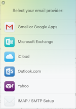
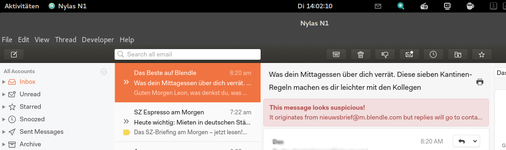

Nylas N1
Achtung!
Anfang 2017 gab es größere Änderungen bei Nylas: Nylas N1 wurde im Januar 2017 in Nylas Mail umbenannt, die Sync-Engine wurde grundlegend überarbeitet und es wurde das Bezahlmodell geändert.
Dieser Artikel wurde für die folgenden Ubuntu-Versionen getestet:
Ubuntu 16.04 Xenial Xerus
Zum Verständnis dieses Artikels sind folgende Seiten hilfreich:
Nylas N1  ist ein IMAP-Mailclient für Linux, Mac OS X und Windows, der sich durch große Erweiterbarkeit und eine einfache Bedienung auszeichnet. Inzwischen ist er in der kostenlosen Version jedoch nur noch mit Einschränkungen nutzbar. Für das Upgrade auf Nylas Pro werden 7 Dollar pro Monat fällig (bei jährlicher Abrechnung). Weitere Infos gibt es auf der Homepage von Nylas .
ist ein IMAP-Mailclient für Linux, Mac OS X und Windows, der sich durch große Erweiterbarkeit und eine einfache Bedienung auszeichnet. Inzwischen ist er in der kostenlosen Version jedoch nur noch mit Einschränkungen nutzbar. Für das Upgrade auf Nylas Pro werden 7 Dollar pro Monat fällig (bei jährlicher Abrechnung). Weitere Infos gibt es auf der Homepage von Nylas .
Installation¶
Nylas N1 muss als .deb-Datei auf der Herstellerseite heruntergeladen werden und kann dann manuell installiert werden[1].
Hinweis!
Fremdpakete können das System gefährden.
Bedienung¶
|  |
| Anlegen eines neuen Accounts |
Das Programm kann nach Eingabe von "Internet -> Nylas N1" sofort gestartet werden [2].
Beim ersten Start öffnet sich ein Dialog, mit welchem man ein Mailkonto hinzufügen kann. Derzeit werden folgende Anbieter unterstützt:
GMail
Yahoo!
iCloud
Microsoft Exchange & Outlook
sämtliche IMAP-Konten
Klassische POP3-Konten werden nicht unterstützt. Nach dem Hinzufügen eines Kontos lässt sich noch die Benutzeroberfläche konfigurieren und die Shortcuts anpassen. Bei den Shortcuts bietet Nylas N1 die Möglichkeit, die gleichen Befehle wie in anderen Mailprogrammen (Outlook, Apple Mail,...) zu verwenden.
|  |
| Benutzeroberfläche von Nylas N1 |
Privatsphäre/Eigener Sync-Server¶
In der Standardausführung leitet Nylas N1 alle Mails über einen eigenen Sync-Server. Für Benutzer, die das als Eingriff in ihre Privatsphäre empfinden, besteht die Möglichkeit, einen eigenen Sync-Server (z.B. in einer virtuellen Maschine) einzurichten. Näheres dazu auf der Webseite von Nylas .
Plugins¶
Nylas N1 bietet die Möglichkeit, eine Vielzahl an Plugins zu installieren. In der Standardinstallation werden 13 Plugins mitgeliefert, die in den Einstellungen einzeln aktiviert bzw. deaktiviert werden können. Plugins ermöglichen z.B. die Erstellung von Quick Replies, mit denen man schnell auf E-Mails antworten kann oder auch das Tracking von Mails. Auf GitHub kann man eine Liste mit allen verfügbaren Plugins einsehen.
Links¶
N1 Email Client -- A User-Friendly Option
- Artikel zur Einrichtung und Verwendung der Plugins, 01/2016
- Erstellt mit Inyoka
-
 2004 – 2017 ubuntuusers.de • Einige Rechte vorbehalten
2004 – 2017 ubuntuusers.de • Einige Rechte vorbehalten
Lizenz • Kontakt • Datenschutz • Impressum • Serverstatus -
Serverhousing gespendet von